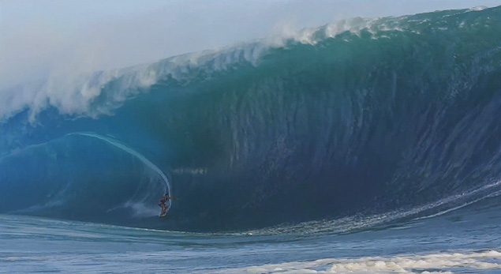

Legend Surf Spot
Legend LevelTeahupoo. The name alone sends shivers down the spine of every surfer on Earth. This is not just a wave - it's a force of nature that has claimed boards, careers, and challenged the very limits of what's possible in surfing. Only the world's elite dare to paddle out when Teahupoo is firing.

Teahupoo - The End of the Road
Known as "The End of the Road" because it's literally at the end of the road on Tahiti's southern coast, Teahupoo produces some of the heaviest, most perfect barrels in surfing history. The wave breaks over an extremely shallow reef, creating thick, powerful tubes that seem to defy physics.
Teahupoo hosts the annual WSL Championship Tour event, where the world's best surfers compete for glory in conditions that can range from playful to absolutely terrifying. The wave can reach over 20 feet and produces barrels so thick and powerful that wipeouts can be catastrophic.
For spectators, Teahupoo offers one of surfing's greatest shows. Boat tours allow visitors to watch from the channel as surfers drop into waves that seem impossible to survive. The 2024 Paris Olympics even held surfing events here, showcasing this legendary wave to the world.
Unless you are among the world's top surfers with years of experience in heavy waves, Teahupoo should remain a dream to watch rather than ride. The wave demands absolute respect and has humbled even the greatest surfers in history.